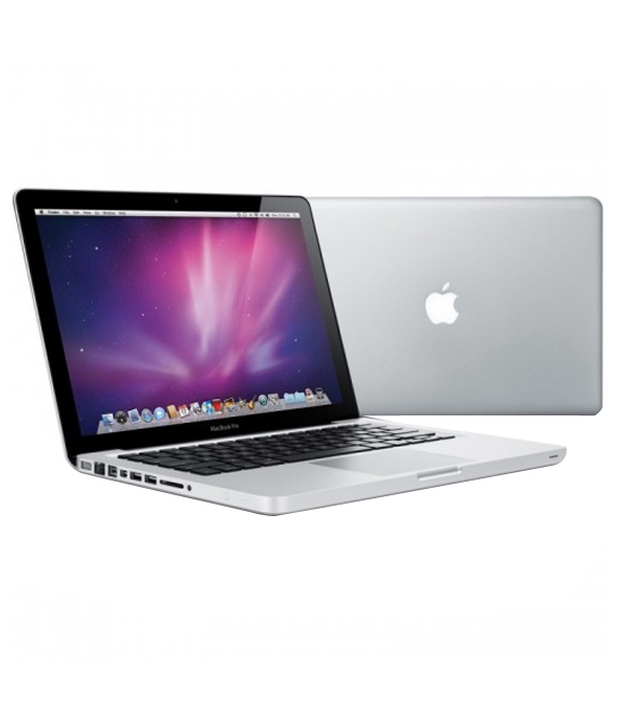

Macbook Air
Thông số kỹ thuật
Màn hình
Kích thước màn hình : 11.6 inch
Độ phân giải (W x H) : 1366 x 768 pixels
Công nghệ màn hình : HD LED
Cảm ứng : Không
Bộ xử lý
Hãng CPU : Intel
Công nghệ CPU : Core i5
Loại CPU : Dual-Core
Tốc độ : 1.60 GHz
Bộ nhớ đệm : 3 MB (L3 Cache)
Tốc độ tối đa : 2.7 GHz
Bo mạch
Chipset : Intel Chipset
Tốc độ Bus : 1600 MHz
Hỗ trợ RAM tối đa : 8GB
Bộ nhớ
Dung lượng RAM : 4 GB
Loại RAM : DDR3
Tốc độ BUS RAM : 1600 MHz
Đĩa cứng
Loại ổ đĩa : SSD
Dung lượng ổ đĩa : 128 GB
Đồ họa
Chipset đồ họa : Intel HD Graphics 6000
Bộ nhớ đồ họa : Share
Kiểu thiết kế đồ họa : Tích hợp
Âm thanh
Kênh âm thanh : 2.0
Công nghệ : High Definition (HD) Audio
Đĩa quang
Tích hợp : Không
Loại đĩa quang : Không
Tính năng mở rộng & cổng giao tiếp
Cổng giao tiếp : 2xUSB3.0 , 1xThunderbolt 2, 1xMagSafe2 power
Giao tiếp mạng
Lan : Không
Chuẩn Wifi : IEEE 802.11b/g/n/ac
Kết nối không dây khác : Bluetooth v4.0
Pin/Battery
Loại pin : Lithium - Polymer
Thời gian hoạt động : 9 Giờ lướt web
Hệ điều hành
Hệ điều hành kèm theo máy : Mac OS X
Kích thước & trọng lượng
Dài : 300 mm
Rộng : 192 mm
Cao : 17 mm
Trọng lượng : 1.08 Kg
Bảo hành
Thời gian bảo hành : 12 Tháng